Introduction
Thank you very much for choosing our theme. We truly appreciate and really hope that you'll enjoy our theme!If you like this theme, Please support us by rating us 5 stars (How to rate?)
Need Support?
If you have any questions regarding to theme issues, please submit a ticket at http://support.goodlayers.com/ (Registration Required)Theme Installation
Once you purchase the theme from themeforest, you'll be able to load 2 file type.- All Files and documentation
- Installable Wordpress Theme File
Install theme via Wordpress Dashboard
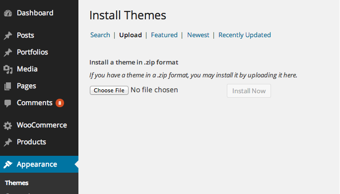- Go to 'Appearance > Theme' section
- Click 'Add New' and select the 'Upload' option
- Upload the zip file
- All Done :)
Install theme via FTP
- Access to the file on your server using ftp editor program
- Go to 'wp-content/themes' folder
- Extract the zip file and put the themename-vxx_xx folder there
- Go to 'Wordpress Dashboard > Appearance > Theme' section to activate the theme
- All Done :)
Install Plugins
After you install the theme, there'll be a list of suggested and recommended plugins at the top of the wordpress dashboard.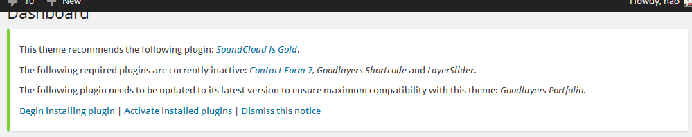
If you already hide it out, you can go to 'Appearance > Install Plugins' section instead too.
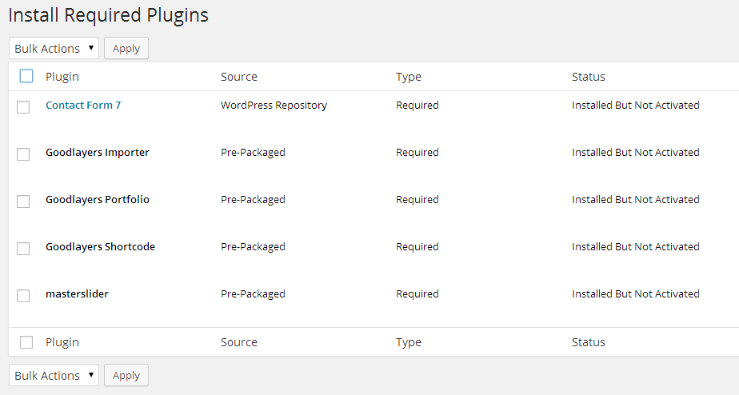
Importing Demo Content
After activating the theme, there'll be suggested plugin listed at the top ( if there aren't, you can go to 'Appearance > Install Plugins' section as well ).Try installing and activating these following plugins ( as it effects the importing process ). You can also install all suggested plugins at this step as well.
- Goodlayers Importer
- Goodlayers Portfolio
- Woocommerce ( optional )
- Contact Form 7 ( optional )
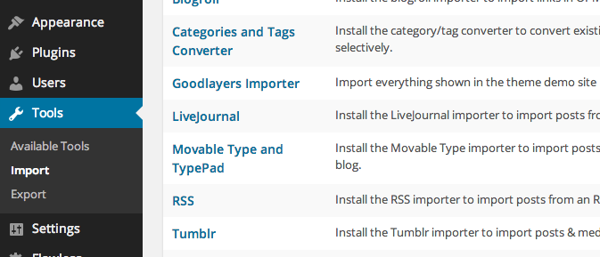
Follow the steps mentioned on the screen, then, you'll get the site like the demo :)
Setting up another homepage
After importing the demo site, try following these stepsGo to 'Settings > Reading' to change front page to any page you want
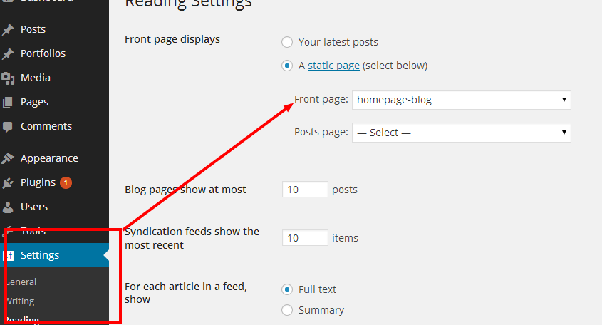
Theme Translation
1.) You need to download and install the poedit application
2.) Generate the theme/plugin word
After you install the downloaded application, click 'Create New Translation' button then choose the .pot file in languages folder ( of the theme or plugins )
Then choose the language you want to translate(or change the word) into, select the word you want to translate then fill it in translation box.

3.) After you finish translating your content, save the file and you'll see two new files
- .po file : contain the string and the translation you already translated, if you need to translate more words, you can open this file to add more translation
- .mo file : is a non-readable file which wordpress actually use.

4.) Put the .mo file into theme OR plugin languages directory (in the server)
File name must be xx_XX.mo ( en_US.mo ) for the theme translation
File name must be pluginname-xx_XX.mo ( gdlr-menu-en_US.mo ) for the plugin translation
You can see how to name the file from the original .pot file we provided as well ( ex. gdlr-menu-xx_XX.pot, xx_XX.pot )
Theme Customization / Updatation
Adding new style / script
There're an option at the 'Theme option > General > Page Style > Additional Style / Script' section ( You can add the code directly without any style / script tag )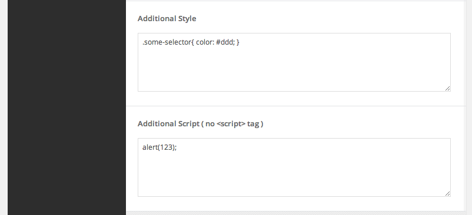
Adding / modify php code
If you don't want to modify the theme files everytime you update the theme, you have to create the child theme to modify the php code for this. You can find the tutorial about how to create the child theme here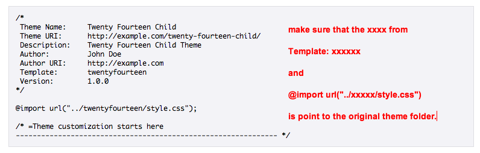
Our theme wrap every function with if( !function_exists('some_function') ) command, so if you want to use any function, just declare it in the function.php file of the child theme and it'll overwrite the existing one.
Updating the theme
There're no auto update function in our theme, so you have to manually install it again. Try following this steps for this.- Download the zip file from themeforest again
- Install it to different folder ( or just simply uploading via wordpress dashboard without removing the old one)
- Activating new theme version
- Set the menu to themes location at the 'Appearance > Menu' section.
- Save the theme option once
- Make sure everything is working properly and you can remove the old theme files out
Child Theme
To create child theme
If you don't want to modify the theme files everytime you update the theme, you have to create the child theme to modify the php code for this. You can find the tutorial about how to create the child theme hereOur theme wrap every function with if( !function_exists('some_function') ) command, so if you want to use any function, just declare it in the function.php file of the child theme and it'll overwrite the existing one.
Header Style
There're 2 header style in this theme which you can selected it at each page option. The default settings can be set at 'Theme option > Overall Elements > Header / Logo' section.Header Style Transparent
Header Style Solid
Changing Logo
You can changing logo at the 'Theme option > Overall Elements > Header / Logo' section. You can upload 2x size image, then specifying the logo size to make it look sharp on retina device as well.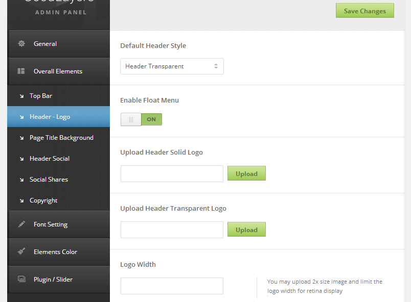
There're 2 upload field for header transparent and header solid style. You can fill the same image if you want it to be the same.
Creating Homepage
Go to 'Page > Add New' to create new page.You can assign the page sidebar, header background and attribute at the page option area ( Normally it's below where you update the page and select the page template )

You can also load the demo page scenario ( without images included ) at the 'Load Demo Page' section below the page option as well. Please use this option with caution that it will overwrite all settings in this page and this cannot be undone.
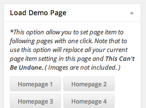
Set the page as Homepage
Go to 'Setting > Reading' area. Choose the front page as static page and select the page you want to be homepage.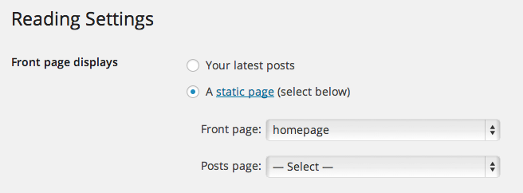
Creating Slider
There're 3 kinds of slider in this theme.- Master Slider
- Flex/Nivo Slider
- Post Slider
Master Slider
1.) Make sure that Master Slider plugin is activated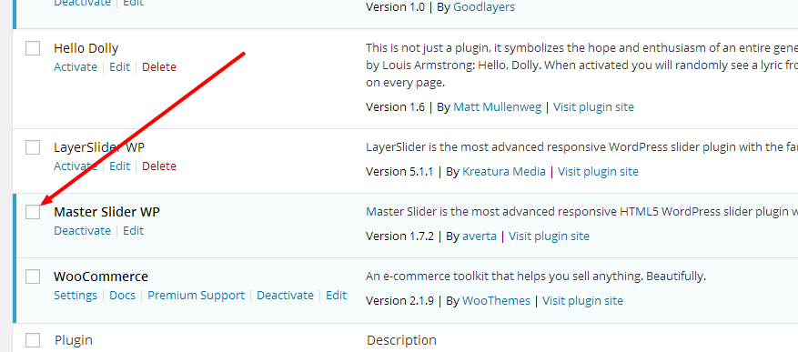
2.) You can learn how to use Master Slider via this video > http://www.youtube.com/channel/UCd4BlK14-aI_Pqh9L2SLD5Q Or this document http://masterslider.com/doc/wp/#slider-settings
3.) Go to edit page that you need to put slider and add page item 'Master Slider'.
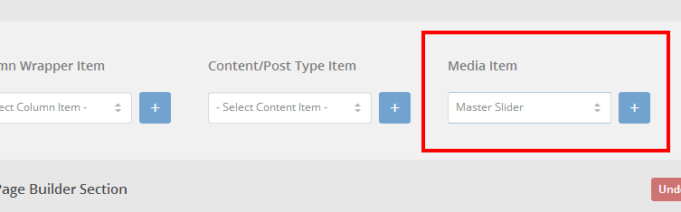
4.) Click on gear icon on page item.
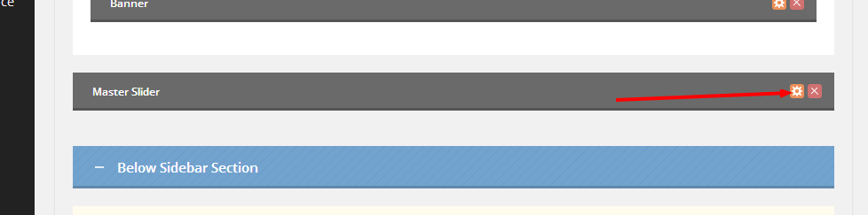
5.) Select slider name that you created in 2.)

Flex/Nivo Slider
1.) Go to page that you need to put slider and add page item 'Slider'.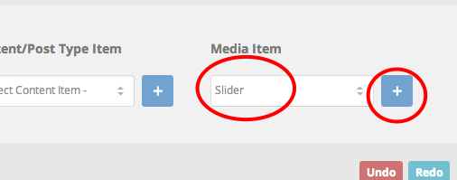
2.) Click on the gear icon on page item to choose option.
3.) Add images, select slider type and choose thumbnail size.
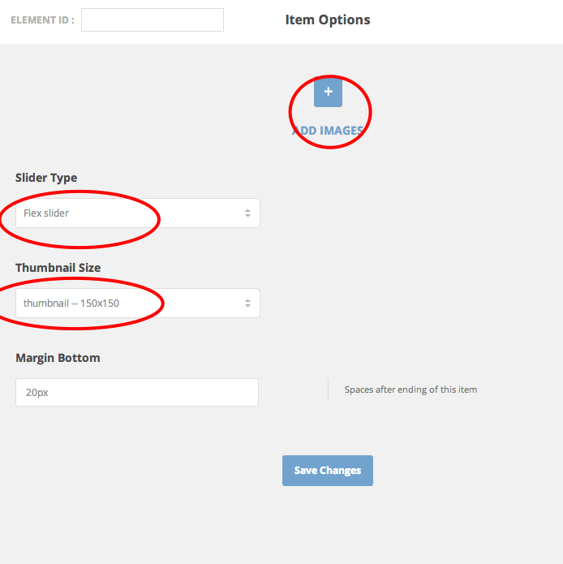
Post Slider(From Blog Posts)
1.) Go to page that you need to put slider and add page item 'Post Slider'.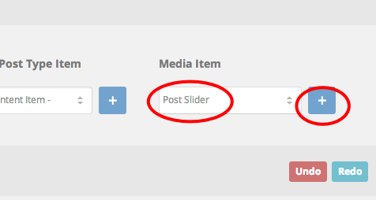
2.) Click on the gear icon on page item to choose option.
3.) Select blog category, thumbnail size and other options.
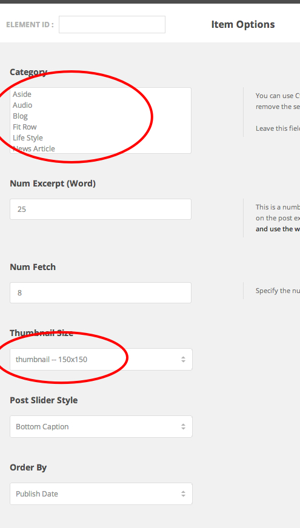
Sidebar Creation
Sidebar can be created at the appearance > widget area.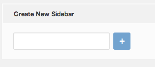
After you create new sidebar, you can drag any widget into it to fill the content. ( red cross button allow you to remove that sidebar out. )
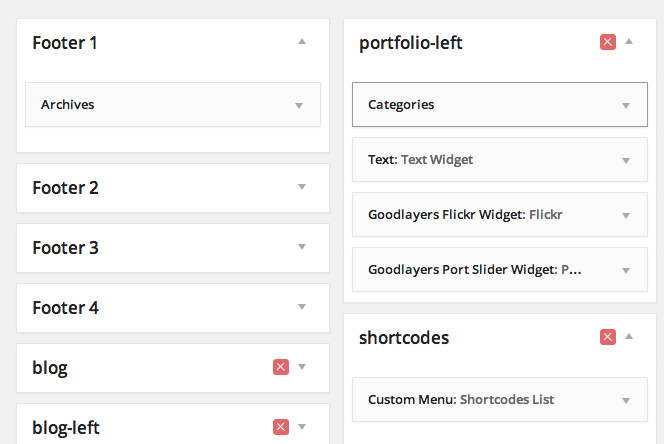
Assigning the sidebar
After you create sidebar, you can assign it to any page/post/portfolio you want in the page/post/portfolio option area. You can also set the default sidebar for blog page, archive/search page, woocommerce product and woocommerce single page at the 'Theme option > General' section as well.Page Builder Component
Page builder divided to 3 types- Wrapper Item
- Content / Post Type Item
- Media Item
Wrapper Item
Wrapper item is the container which allow you to changes the size, layout and style of the displayed item. It divided to 4 different main component.- Full Width : Allows you to display the content out of the container area. ( full width across window screen )
- Color Wrapper : Allows you to changes the section background color.
- Background Wrapper : Allows you to put custom image or select predefined pattern as background. There're also option to move background while you scroll ( parallax ) the site as well
- Column Wrapper : Allows the ability to divide the item to columns. Can put this item inside Background Wrapper and Color Wrapper
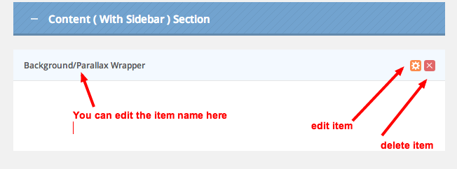
Content / Post Type / Media item
This is an item which display the actual content on your site. You can put these item within the wrapper item. Here's the list of all content / post type and media item ( you can click the link to view image in lightbox )Content
Box IconColumn Service
Divider
Feature Media
Notification
Pie Chart
Service With Image
Stunning Text
Skill Bar
Skill Item
Styled Box
Title
Once you add the item, you can click the gear sign to edit the item parameter.
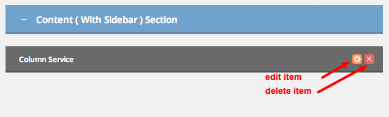
Page Item Area
We have 3 sections for page item area.- Above Sidebar Section
- Content (With Sidebar) Section
- Below Sidebar Section
See how it works here...
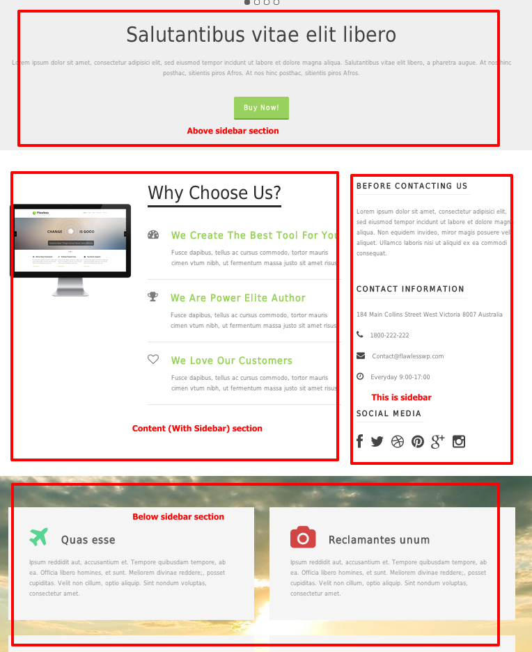

Creating Blog
1.) Go to 'Post > Add New' and fill the info you want.

2.) You can set the post sidebar at the 'Goodlayers Post Option' area.
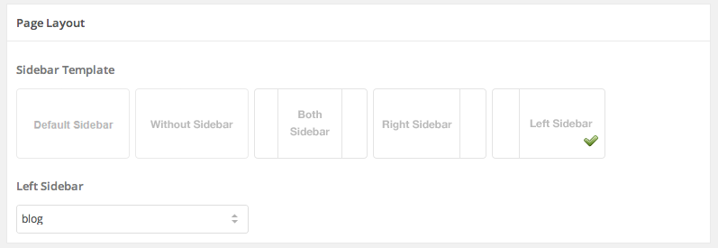3.) Assign category(s).
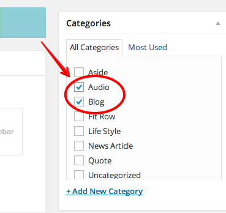4.) Select featured image for thumbnail.(You may skip this if you use post format,... see below for detail) and publish the post
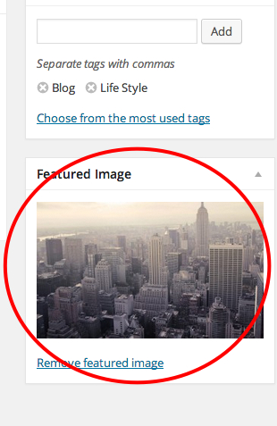5.) Create a new page and add page item 'blog'.
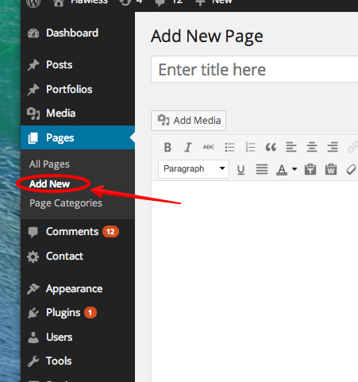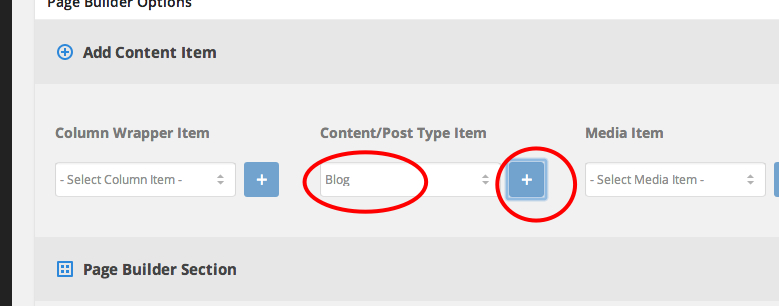
6.) Click on gear icon on page item to set options.
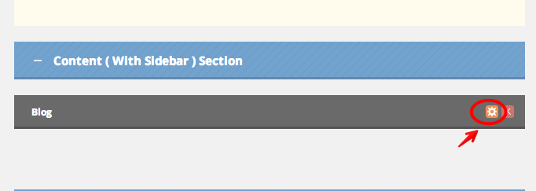7.) Select category(s), blog layout, thumbnail size and many other options here.
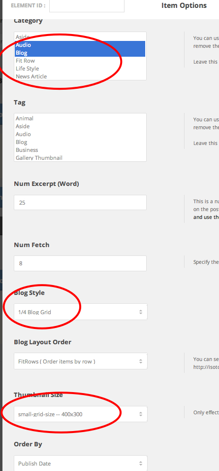8.) Publish the page.
Default Sidebar And Thumbnail Size
The default post sidebar(also applied to old posts before activating theme) and the thumbnail size of individual post page can be set at the 'Theme option > General > Blog Style'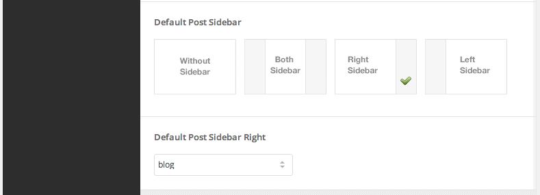
Post Format
Normally, when you add images, video, audio in to the content of each post, it'll show among the content area. Post format give you an ability to style them in different ways. You can see all post format style at the top of this link on our demo site.Here's the list of how each post format will react when you place different content.
- Standard : Feature image will be shown above post title | screenshot1 | screenshot2
- Image : Place the url of the image at the top of the post and it'll show up above the post title screenshot1 | screenshot2
- Gallery : Place the gallery shortcode at the top of the content and it'll show a slideshow above post title | screenshot1 | screenshot2
- Aside : All content in aside post format will shows like this | screenshot1
- Link : Place link url at the top of the content and it'll link the title of the post to the link you want | screenshot1 | screenshot2
- Quote : Place quote html at the top and the rest content will shows as quote author | screenshot1 | screenshot2
- Audio : Place audio url or shortcode at the top and it'll showing up above post title | screenshot1 | screenshot2
- Video : Place video url or shortcode at the top and it'll showing up above post title | screenshot1 | screenshot2
Creating Portfolio
1.) Go to 'Portfolios > Add Portfolios' and fill the info you want.
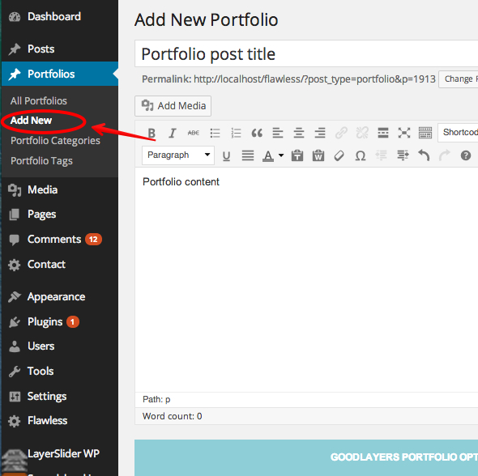2.) You can set the portfolio sidebar at the 'Goodlayers Post Option' area.
3.) Assign category(s).
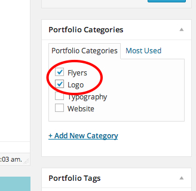4.) Select featured image for thumbnail and publish the post.
5.) Create a new page and add page item 'Portfolio'.
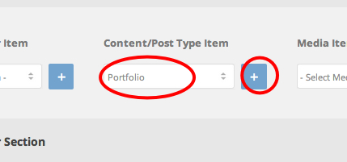
6.) Click on gear icon on page item to set options.
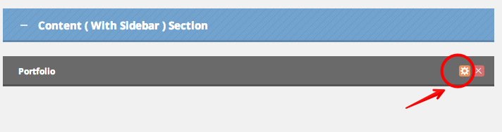7.) Select category(s), portfolio layout, thumbnail size and many other options here.
Portfolio Title Link option will allow you to open portfolio in lightbox instead.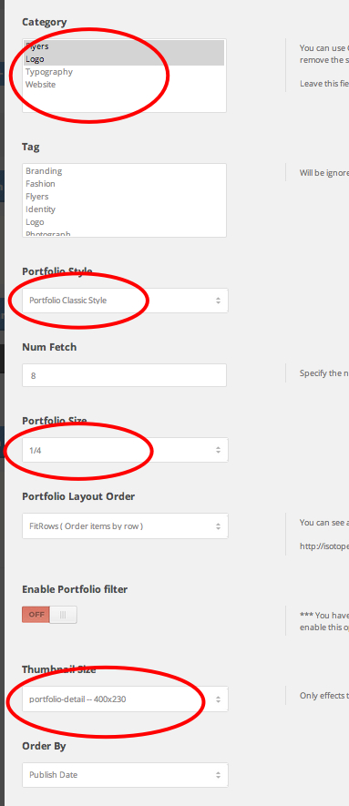
8.) Publish the page.
Portfolio Thumbnail Type
Thumbnail in portfolio list page
You can select type as 'Featured image', 'Video', 'Slider' and for 'Featured image', you'll be able to open lightbox with image, video or you can also let it link to specific url as well.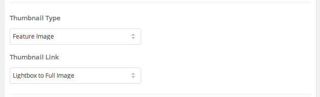
Thumbnail in portfolio single post
You can select type as 'Image', 'Video', 'Slider' and 'Stack images'.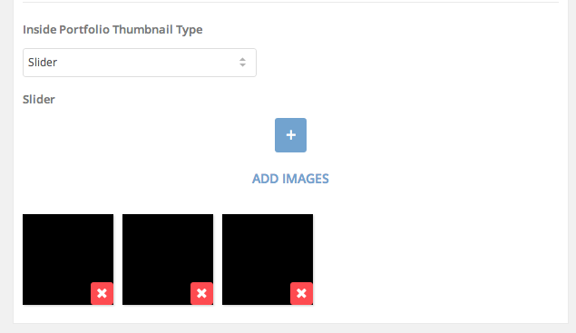
You can learn more about thumbnail management in 'FAQ > Video Tutorial > Thumbnail Management'.
Portfolio Single Post Layout
There're 3 individual portfolio style which can be changed in the 'Theme option > General > Portfolio' section. ( Also the thumbnail size can be changed at the same place as well. )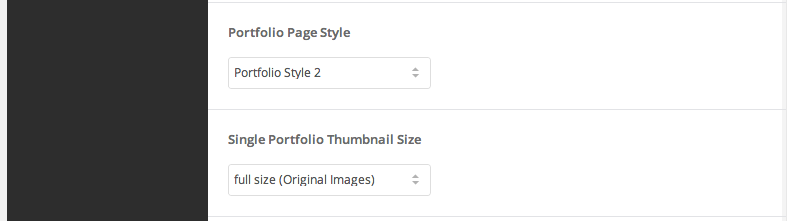
Shortcodes
Complete Shortcodes List Available Here
http://demo.goodlayers.com/finanza/corporate/typography/Or You can use shortcodes easily by clicking on shortcode generator button.
You can also put it in any content/text area.
Thumbnail Size
There're several predefined thumbnail size in our theme. Which you will be able to select it at 'Thumbnail Size' option in theme option, blog item, portfolio item, etc.You can add, change and delete the size by going to function-size.php file. At the top, you'll see $gdlr_thumbnail_size variable
Try adding ( removing or changing ) new size by adding the line of code in this format.
'SIZE_NAME' => array( 'width'=>'NUMBER', 'height'=>'NUMBER', 'crop'=>true ),Since the changes only effects the newly uploaded images, after you successfully changed the image size, you may use the 'Regenerate Thumbnail' plugin to generate the thumbnail for old images as well.
Changing the thumbnail size via Child Theme
In case you want to modify the code via child theme, simply add this to function.php file of the child theme for this.
add_filter('gdlr-thumbnail-size', 'my_custom_image_size');
function my_custom_image_size( $size ){
return array(
'post-thumbnail-size' => array('width'=>650, 'height'=>265, 'crop'=>true),
'small-grid-size' => array('width'=>400, 'height'=>300, 'crop'=>true),
'portfolio-detail' => array('width'=>400, 'height'=>230, 'crop'=>true),
'portrait' => array('width'=>440, 'height'=>550, 'crop'=>true),
'post-slider-bottom' => array('width'=>650, 'height'=>385, 'crop'=>true),
'post-slider-side' => array('width'=>650, 'height'=>325, 'crop'=>true),
'full-slider' => array('width'=>980, 'height'=>380, 'crop'=>true),
);
}
Changing Theme Color / Font
Changing Theme color
There're 2 ways to change the theme color- Theme option
- Wordpress Customizer
Font Size / Family
You can change the font size / family at the 'Theme option > Font Settings' area.To upload new font, go to 'Theme option > Font Settings > Upload Font' section. Add new font, fill the font name and upload the eot AND ttf font in the provided fields. ( Both font type are necessary for support of font among different browsers )
How to Update Theme
To update the theme, You need to login to your Themeforest profile page, click on 'download' tab, then download the theme again. After that,- After you downloaded file from Themeforest. Do not upload it yet. Extract it!
- You will find 6-7 folders and some files inside. You'll see the file called 'THEMENAME-vx-xx.zip'
- Upload this file through wp backend and activate the theme.
- After that go to 'appearance > menu' and assign menu location again then go to admin panel and click 'save changes'.
- Go to 'Appearance > Plugins', active Goodlayer plugin again.
Please also read 'Updating GoodLayers Plugin' and 'Updating Master Slider' if it get updated.
How to GoodLayers Plugins
First of all, please note that you can't use this method with Master Slider.- Go to 'Appearance > plugin', deactivate Goodlayers plugins and delete them. :

- After you delete them, you'll see this message :

Click on 'Begins installing plugins' - Install them and don't forget to activate too! :

How to update Master Slider
- After you download theme package from Themeforest, Extract the package and go to folder 'THEMEMAME-vx-xx'
- Go to the path, 'include/plugin/plugins/masterslider.zip'
- Extract the file, then copy the folder 'masterslider'
- Access to your site via FTP, to the path 'wp-content/plugins'
- Replace the existing folder in this path with the one you copied from 3.)
How to get twitter authentication info
There're 4 fields available when you use twitter widget. You have to follow these following steps to get all twitter access info for this.- Go to https://dev.twitter.com/apps
- Sign in on your twitter account
- Click 'Create New Application' button
- fill all required fields

- Click the 'Create Access Token' button
- Fill the data you get on to the provided twitter info fields.
Snippet Code
Footer 1 : place this in text widgetFooter 4 : place this in text widgetCum sociis natoque penatibus et magnis dis parturient montes, nascetur ridiculus mus. Morbi leo risus, porta ac consectetur ac, vestibulum at eros.
[gdlr_icon type="fa-phone" size="16px" color="#bbbbbb"] 1800-222-222 [gdlr_space height="-10px"] [gdlr_icon type="fa-envelope" size="16px" color="#bbbbbb"] contact@versatilewptheme.com [gdlr_space height="-10px"] [gdlr_icon type="fa-clock-o" size="16px" color="#bbbbbb"] Everyday 9:00-17:00 [gdlr_space height="30px"] [gdlr_icon type="icon-facebook" size="20px" color="#bbbbbb"] [gdlr_icon type="icon-twitter" size="20px" color="#bbbbbb"] [gdlr_icon type="icon-dribbble" size="20px" color="#bbbbbb"] [gdlr_icon type="icon-pinterest" size="20px" color="#bbbbbb"] [gdlr_icon type="icon-google-plus" size="20px" color="#bbbbbb"] [gdlr_icon type="icon-instagram" size="20px" color="#bbbbbb"]Top Bar Right : place this at 'Theme option > Overall elements > Top Bar'
Copyright Left : place this at 'Theme option > Overall elements > Copyright'Mon - Fri : 09:00 - 17:00contact@beautycare.com1800-222-222
Home | About | Terms | ContactContact Page Info : place this in text widget
184 Main Collins Street West Victoria 8007 Australia [gdlr_icon type="fa-phone" size="16px" color="#444444"] 1800-222-222 [gdlr_icon type="fa-envelope" size="16px" color="#444444"] contact@versatilewptheme.com [gdlr_icon type="fa-clock-o" size="16px" color="#444444"] Everyday 9:00-17:00Contact Page Social : place this in text widget
[gdlr_icon type="icon-facebook" size="28px" color="#444444"] [gdlr_icon type="icon-twitter" size="28px" color="#444444"] [gdlr_icon type="icon-dribbble" size="28px" color="#444444"] [gdlr_icon type="icon-pinterest" size="28px" color="#444444"] [gdlr_icon type="icon-google-plus" size="28px" color="#444444"] [gdlr_icon type="icon-instagram" size="28px" color="#444444"]About us content (About Us Page) : place this at 'About Us' item's content area
Vertical tab content (About Us Page : place this at 'Tab' item's content area

Integer posuere erat a ante venenatis dapibus posuere velit aliquet. Aenean lacinia bibendum nulla sed consectetur. Nulla vitae elit libero, a pharetra augue. Donec id elit non mi porta gravida at eget metus. Morbi leo risus, porta ac consectetur ac, vestibulum at eros. Integer posuere erat a ante venenatis dapibus posuere velit aliquet. Nulla vitae elit libero, a pharetra augue. Donec ullamcorper nulla non metus auctor fringilla. Curabitur blandit tempus porttitor. Cras justo odio.
Aenean Tellus
Duis mollis, est non commodo luctus, nisi erat porttitor ligula, eget lacinia odio sem nec elit. Morbi leo risus, porta ac consectetur ac, vestibu lum at eros. Nulla vitae elit libero, a pharetra augue. Donec id elit non mi porta. Nullam quis risus eget urna mollis ornare vel eu. Maecenas faucibus mollis interdum. Cras justo odio, dapibus ac facilisis in, egestas eget quam. Vivamus sagittis lacus vel augue laoreet rutrum faucibus dolor auctor. Curabitur blandit tempus porttitor. Nullam id dolor id nibh ultricies vehicula ut id elit. Donec ullamcorper nulla non metus auctor fringilla. Vestibulum. Donec id elit non mi porta gravida at eget metus. Fusce dapibus, tellus ac cursus commodo, tortor mauris condimentum nibh, ut fermentum massa justo sit amet risus. Cras justo odio, dapibus ac facilisis in, egestas eget quam. Vivamus sagittis lacus vel augue laoreet rutrum faucibus dolor auctor.


{kind=link}
{kind=link}
{kind=link}
{kind=link}
{kind=link}
{kind=link}
{kind=link}
{kind=link}
{kind=link}
{kind=link}
{kind=link}
{kind=link}
{kind=link}
{kind=link}
{kind=link}
{kind=link}
{kind=link}
{kind=link}
{kind=link}
{kind=link}
{kind=link}
{kind=link}
{kind=link}
{kind=link}
{kind=link}
{kind=link}
{kind=link}
{kind=link}
{kind=link}
{kind=link}
{kind=link}
{kind=link}
{kind=link}
{kind=link}
{kind=link}
{kind=link}
{kind=link}
{kind=link}
{kind=link}
{kind=link}
{kind=link}
{kind=link}
{kind=link}
{kind=link}
{kind=link}
{kind=link}
{kind=link}
{kind=link}
{kind=link}
{kind=link}
{kind=link}
{kind=link}